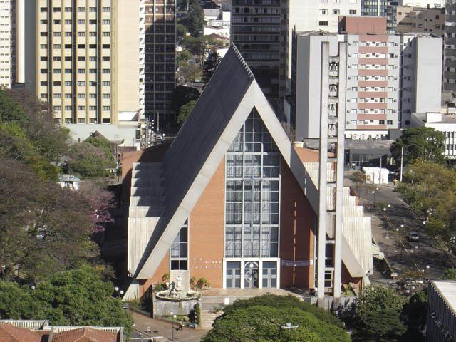

Catedral Metropolitana

Jardim Botânico

Lago Igapó
A história de Londrina está diretamente ligada ao processo de colonização planejada do Norte do Paraná durante as primeiras décadas do século XX. Antes da chegada dos colonizadores, a região era dominada pela densa Mata Atlântica e habitada principalmente por grupos indígenas, especialmente os povos Kaingang, que utilizavam o território para caça, pesca e coleta, vivendo em aldeias dispersas. Por muito tempo, a região permaneceu praticamente isolada, já que o interior do Paraná não possuía estradas estruturadas e o acesso era difícil, o que desestimulava a ocupação e o desenvolvimento econômico da área. A transformação começou na década de 1920, quando o governo do Paraná estabeleceu acordos com empresários ingleses ligados à Brazil Plantation Syndicate, que posteriormente formaram a Companhia de Terras Norte do Paraná (CTNP). Esses empresários tinham interesse econômico na venda e colonização de terras, pois sabiam da fertilidade excepcional do solo, principalmente da chamada terra roxa, um tipo de solo de origem vulcânica extremamente fértil e ideal para o cultivo de café. A CTNP adquiriu vastas áreas no Norte do Paraná e iniciou um processo de colonização planejada, que incluía o loteamento das terras, a derrubada da mata, a criação de estradas, a construção de centros urbanos e a venda de terrenos para colonos brasileiros e imigrantes estrangeiros. Foi nesse contexto que, em 1929, surgiu o primeiro núcleo urbano da futura cidade, próximo ao que hoje é a área central de Londrina. Por ser resultado direto de uma companhia inglesa, o povoado recebeu o nome de Londrina, cujo significado é “pequena Londres”, uma referência à influência britânica que organizou sua formação. O crescimento do povoado foi rápido, impulsionado pela chegada de migrantes principalmente de São Paulo, Minas Gerais, Rio Grande do Sul, além de grande número de italianos, japoneses, alemães e outras comunidades que vieram à procura de oportunidades na agricultura. Com o aumento da população, do comércio e da produção agrícola, Londrina foi elevada à categoria de município em 10 de dezembro de 1934, data que atualmente marca seu aniversário oficial. Desde o início, a cidade apresentou um planejamento urbano bem estruturado, com ruas largas e quadras organizadas, algo incomum para cidades brasileiras daquela época, que geralmente cresciam de maneira espontânea e sem organização prévia. Entre as décadas de 1930 e 1970, Londrina tornou-se um dos principais centros de produção de café do mundo. O café adaptou-se perfeitamente ao clima e ao solo da região, gerando enorme riqueza e atraindo importantes empresas comerciais, casas exportadoras, bancos, maquinários agrícolas e trabalhadores de diversas regiões. Esse período ficou conhecido como “Ciclo do Ouro Verde”. A construção da Estrada de Ferro São Paulo–Paraná facilitou ainda mais o transporte da produção para os portos, especialmente o de Santos, consolidando Londrina como um importante centro econômico nacional. Por causa dessa prosperidade agrícola, a cidade ganhou o apelido de “Capital Mundial do Café”. No entanto, a cidade enfrentou momentos difíceis. Em 1944, um grande incêndio destruiu parte significativa do centro urbano, afetando lojas, casas e construções históricas. Apesar do prejuízo, o incidente levou a um processo de reconstrução que modernizou as edificações e alterou a paisagem urbana. O golpe mais duro, porém, ocorreu em 1975, quando aconteceu a chamada Geada Negra. Uma queda brusca de temperatura queimou e destruiu grande parte dos cafezais em toda a região Norte do Paraná, encerrando de maneira definitiva o ciclo cafeeiro como principal atividade econômica de Londrina. Diante dessa crise, a cidade precisou se reinventar. A partir da década de 1970, Londrina diversificou sua economia. A produção agrícola continuou forte, porém voltada para outras culturas, como soja, milho, trigo e cana-de-açúcar. Além disso, o setor industrial cresceu, o comércio se expandiu e a cidade começou a se destacar no setor de serviços, principalmente na área da saúde e educação. Um marco fundamental nessa nova fase foi a fundação da Universidade Estadual de Londrina (UEL), em 1970, que transformou a cidade em referência educacional e científica, atraindo estudantes de várias regiões do país e fortalecendo a vida cultural e intelectual do município. Ao longo das últimas décadas, Londrina se consolidou como a segunda maior cidade do Paraná e um importante polo regional que atende milhões de pessoas de cidades vizinhas em áreas como comércio, medicina, ensino e serviços especializados. A cidade também passou a sediar a ExpoLondrina, uma das maiores feiras agropecuárias da América Latina, que movimenta a economia e reforça a tradição agrícola da região. O Londrina Esporte Clube (LEC), fundado em 1956, é outro símbolo marcante da identidade cultural e esportiva da cidade. Atualmente, Londrina se caracteriza como uma cidade moderna, urbanizada, dinâmica e em constante expansão, preservando sua história enquanto se adapta às transformações econômicas e sociais do Brasil contemporâneo. Sua formação cultural é marcada pela mistura de etnias, tradições e influências trazidas pelos colonos, imigrantes e migrantes que construíram seu desenvolvimento ao longo do tempo. Assim, a trajetória de Londrina revela uma história de crescimento planejado, prosperidade agrícola, superação de crises e capacidade contínua de renovação.
Clique para expandir o texto!
Londrina, localizada no norte do Paraná, foi oficialmente fundada em 10 de dezembro de 1934, em uma região antes coberta por florestas e habitada por comunidades indígenas.
Clique para saber mais!
Lago Igapó, Jardim Botânico, Museu Histórico, Catedral Metropolitana.
Clique para saber mais!
Carne de porco com mandioca; Leitão à pururuca; Feijão tropeiro; Arroz carreteiro.
Clique para saber mais!
Festival Internacional de Londrina (FILO) e ExpoLondrina.
Catedral Metropolitana
Jardim Botânico
Lago Igapó